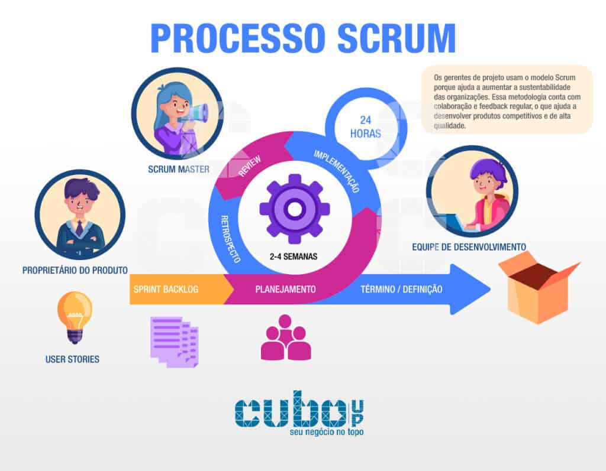

A metodologia ágil é um conjunto de princípios e práticas utilizados para desenvolver projetos de forma mais flexível, rápida e eficaz, permitindo que o projeto seja dividido em partes menores, mais gerenciáveis e com entregas parciais, enfatizando acomunicação clara e contínua da equipe e do cliente. A vantagem de usar esse tipo de metodologia é apossibilidade de lidar com projetos complexos e com requisitos incertos de forma mais eficiente, assim permitindo atender as necessidades do cliente.